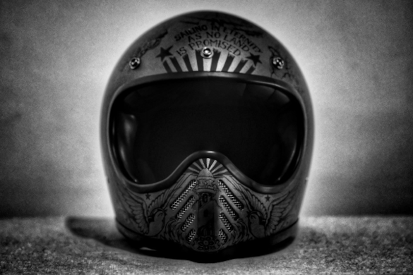

// Dream of unicorns
// Dream of unicorns
---------------------------------------------------------------------------
0x00; main
0x01; profile
0x02; projects
0x03; portfolio
0x04; contact
---------------------------------------------------------------------------
0x01; profile
> About
Juan Serrano a.k.a. "edwsec" is a spanish SecDevOps.
After his HND in Software Engineering in 2009 he begun a bachelor degree
in Computing and Internet Engineering and completed in 2013.
During his period of study, he has had the opportunity to work and to learn
with a really wide variety of people and companies from Spain, thing that
have helped to satisfy his main motivation, to satisfy your curiosity.
Panem et circenses hater. Trying to find poetry in everything he do.
He're living “the absurd” in “hedoné + bios polítikós + bíos theoretikós”
mode.
His main drivers are the photography, security research and travel on
motorcycle.

---------------------------------------------------------------------------


Copyright (c) 2004-2022 Juan Serrano
http://www.shidare.com created by Juan Serrano a.k.a. "edwsec"